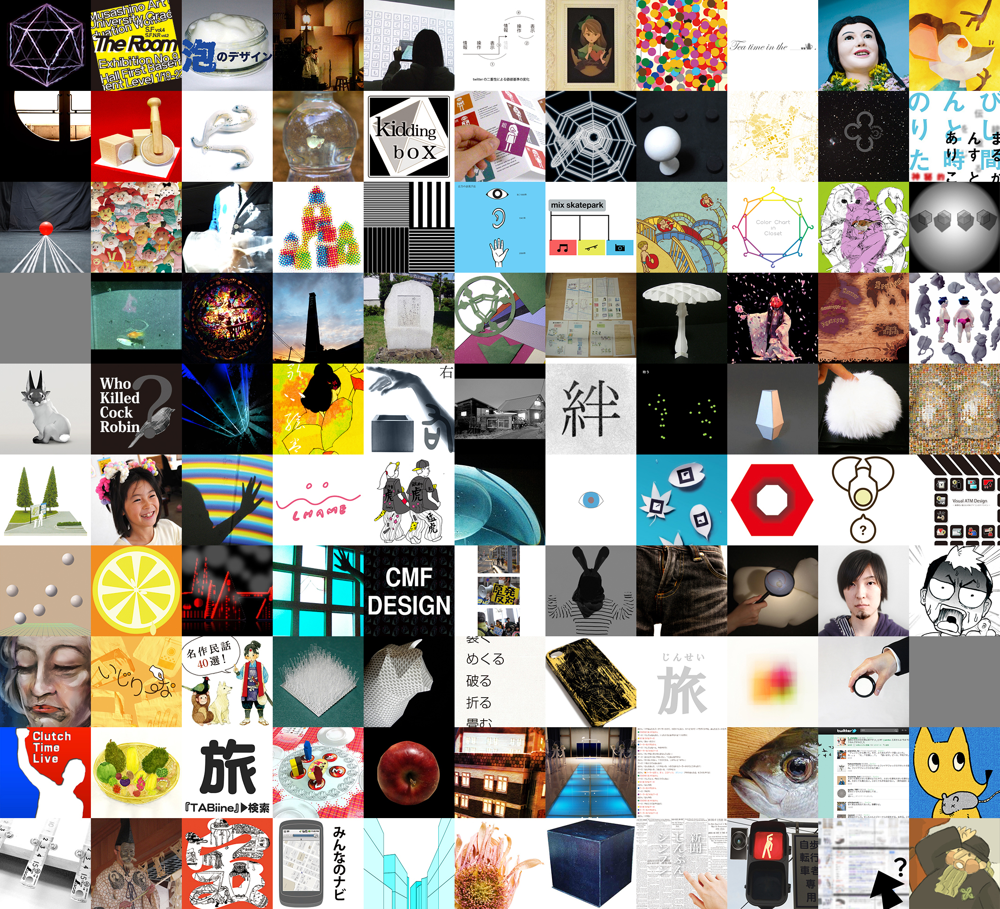

ページ内スクロールを用いたシングルページWebサイト
| URL | http://dipale.musabi.ac.jp/g11/ (Github リポジトリ: https://github.com/shinnn/dipale.musabi.ac.jp-g11) |
|---|---|
| 制作期間 | 2011年12月 〜 2011年1月（以降、リファクタリングなどを行う） |
| 制作人数／担当 | 4人 ／ データベース、PHP、JavaScript全て。HTML、CSSは2人で協力 |
| サイズ | Webページ 1ページ |
| 使用ツール・言語 | PostgreSQL、PHP、CSS、JavaScript |
武蔵野美術大学デザイン情報学科卒業研究・制作展の特設サイトの制作に携わりました。私はコーディングを担当し、「ページ遷移をしない、単一のページに全ての情報を載せる」というデザインの方向性を実現すべく、ユーザーインターフェイスを考え、実装しました。作業効率化を計るため、100人超の学生のデータはデータベース管理システムのPostgreSQLを使って管理し、そのデータを基にPHPでコンテンツを出力しています。
リクエスト回数を減らすため、複数の画像をひとまとめにするCSS Spriteの手法を用いた。CSS Spriteのための座標変更をPHPで行った。
echo "<figure title='作品画像'";
echo " style='background:";
//CSSスプライト 座標算出
echo -floor(($artist_id -1)*0.1/* ceil(0.9) */)*194, "px ";
echo -($artist_id -1)%10*194, "px ";
echo "url(img/works.jpg) no-repeat;'>";
echo "</figure>\n";
